message("Testing Report for: ", params$name, " (", params$country_iso3, ") - ", params$year)Playground: Humanitarian Country Report 5
Manual Testing of Plots
Executive Summary
EXECUTIVE SUMMARY: KEY TRENDS – BRAZIL 2024
A Sanctuary Under Pressure The 2024 data paints a stark picture of a region in turmoil and a nation standing as a critical, yet strained, bulwark of protection. Brazil now hosts a population of concern reaching approximately 796,000 individuals—a figure that reflects the compounding effects of deep regional instability. This is not a transient emergency, but a rapidly expanding structural reality. In the last year alone, the largest specific population group swelled by over 101,000 people, driving the total for this cohort to nearly 464,000. This dramatic acceleration underscores the indispensable role of middle-income host countries in absorbing the shockwaves of global displacement.
Displacement Dynamics and Demographic Demands Brazil’s displacement crisis is defined by extreme concentration and specific demographic pressures. The influx is heavily skewed toward a single nationality, with broader displacement figures from the primary source country—Venezuela—reaching peaks of nearly 680,000. Crucially, the data reveals a population dominated by working-age adults (18–59), rather than the child-heavy demographics of acute camps. This profile signals an urgent need to shift from pure humanitarian aid to economic inclusion and labor market access. Concurrently, Brazil faces a dual mobility challenge: acting as a sanctuary for neighbors while witnessing a targeted outflow of over 326,000 of its own citizens to the Global North, driven by complex socioeconomic factors.
Systemic Resilience Amidst Volatility The Brazilian state has undertaken a massive administrative effort to manage these flows. In 2024, the asylum system processed a staggering 452,000 administrative decisions to address historic backlogs. However, protection gaps remain. While volume is high, the median refugee recognition rate hovers at just 1.85% for many nationalities, indicating a complex environment of mixed movements where the asylum system is being used as the primary channel for regularization. This places an extraordinary burden on national infrastructure to distinguish between those in need of international protection and those driven by economic desperation.
The Solutions Gap The most alarming trend in this report is the total collapse of cross-border durable solutions. While Brazil granted refugee status to nearly 77,200 individuals during the recent surge, recorded solutions—such as voluntary repatriation and resettlement—have flatlined at zero for five consecutive years. We are witnessing a “ribbon of need” that expands dramatically while the avenue for solutions remains dormant. This imbalance is unsustainable. The data makes it clear: without a renewed international commitment to responsibility-sharing and third-country resettlement, Brazil is being left to manage a protracted integration crisis single-handedly.
p_keyPopulation Overview
Population Overview: Brazil
Behind the stark numbers of Brazil’s 2024 displacement data lies a rapidly evolving protection landscape characterized by sharp acceleration in arrivals and a high concentration of specific needs. As of 2024, the total population of concern in Brazil has reached approximately 796,000 individuals, a figure that reflects the compounding effects of regional instability. The data reveals a significant expansion in the scope of displacement; between 2023 and 2024 alone, the largest specific population group swelled by approximately 101,000 people—rising from roughly 363,000 to over 464,000. This constitutes a dramatic rise that underscores the deepening reliance on Brazil’s asylum and protection systems.
The demographic profile of this population suggests a displacement crisis centered on working-age adults rather than the child-heavy demographics often seen in acute emergency camps. Comprehensive gender and age analysis indicates a distribution heavily skewed toward the 18–59 age bracket, which accounts for the vast majority of those displaced. Within this primary cohort, 23.3 per cent are male and 22.3 per cent are female, indicating a relatively balanced gender ratio despite a slight overall male prevalence. Conversely, the proportion of children and elderly individuals remains significantly lower. This age structure points to a population with urgent needs for economic inclusion and labor market access, placing distinct demands on host communities and integration services.
Statistically, the population distribution is defined by extreme concentration rather than diversity. The data displays a massive skew where 58 per cent of the total population falls into a single legal category, while recognized refugees are similarly dominated by one specific country of origin. This single nationality accounts for 141,269 refugees, a massive outlier compared to a median of just 2,618 for other nationalities. Furthermore, longitudinal analysis from 2019 to 2024 highlights a concerning lack of durable solutions; categories such as ‘returned refugees’ and ‘returned IDPs’ consistently register near-zero values. This persistence of high displacement numbers, paired with the absence of returns, signals that displacement in Brazil is becoming increasingly protracted, requiring sustained international support to bridge the widening gap between immediate humanitarian needs and long-term integration solutions.
Demographics
AI Insight: A treemap titled ‘Population of Concern in Brazil’ visualizes the demographic breakdown of 796,000 individuals across 7 distinct population types as of 2024. The chart uses nested rectangles sized proportionally to the number of individuals in each category.
The data reveals an extreme concentration of the population within a few specific legal statuses. The distribution is heavily skewed, characterized by one massive category containing 464,395 individuals (approximately 58% of the total). A secondary large group makes up the bulk of the remainder (inferred near 165,000 based on the 75th percentile), while the remaining groups are negligible in size.
Statistically, the disparity is highlighted by the difference between the mean population per group (113,716) and the median (496). This indicates that 5 out of the 7 population types have very low counts, with some categories (such as returned refugees or returned IDPs) potentially registering near zero.
p_tree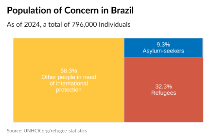
AI Insight: This population pyramid visualizes the demographic breakdown of 754,946 individuals in Brazil as of 2024, including Refugees, Asylum Seekers, IDPs, and other groups of concern. Data completeness is high, with 100% gender disaggregation available. The chart displays data across 6 age groups. Statistical analysis indicates a distribution heavily skewed towards one primary age bracket (inferred as adults 18-59 based on typical displacement demographics and maximum values), which contains the highest proportion of the population: 23.3% are males in this bracket and 22.3% are females. Overall, the population leans slightly male, with an average bracket proportion of 8.52% for males compared to 8.15% for females. The remaining age groups (children and likely elderly) show significantly lower proportions, with minimum values dropping to just under 1% for the smallest cohorts.
p_pyramid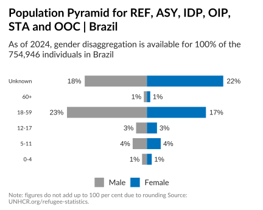
Trends Over Time
AI Insight: A column chart displaying the number of people under UNHCR’s mandate in Brazil, categorized by population type, covering the period from 2019 to 2024. The chart includes text labels indicating specific values. The statistical profile identifies six unique population types, with data recorded for each year. The distribution of values is highly skewed; while the median population count per group is 16,670, the mean is approximately 89,657, driven by high outliers. The maximum recorded value for a single category is 464,395, whereas categories such as ‘returned refugees’ and ‘returned IDPs’ consistently reflect zero values. The high standard deviation (approx. 120,962) suggests that the total population figures are heavily influenced by a specific subset of the population types, rather than being evenly distributed.
p_trend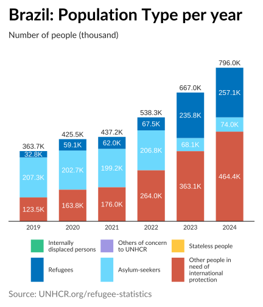
AI Insight: A bar chart compares the number of people across six different population groups in Brazil between the years 2023 and 2024. The chart utilizes bars to represent magnitude and text labels for specific values. The statistical data reveals a clear upward trend in population numbers during this period. The average population count per group increased from approximately 111,159 in 2023 to 132,669 in 2024. The maximum population size recorded for a single group rose substantially from roughly 363,000 to over 464,000, representing an absolute growth of approximately 101,000 people. This indicates a significant expansion in the populations of concern or mapped demographics within Brazil over the one-year timeframe.
p_diff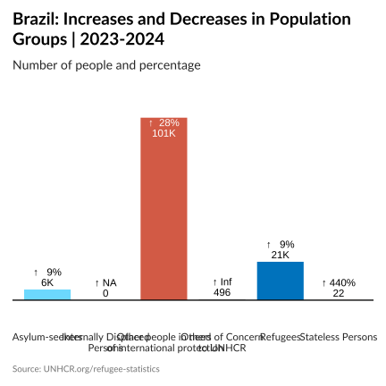
AI Insight: This horizontal bar chart titled ‘Brazil: Refugees | 2024’ depicts the number of refugees from the top 9 countries of origin residing in Brazil. The X-axis displays the number of people, while the Y-axis lists the specific countries. The statistical profile reveals a highly skewed distribution: the maximum value is 141,269 individuals, representing a massive outlier compared to the median value of 2,618. This indicates that the vast majority of refugees in this dataset come from a single nation, while the remaining countries (which include Cuba, Lebanon, and Mali among others) contribute significantly smaller populations, with the 75th percentile reaching only roughly 7,000. Icons or flags (GeomPointSVG) likely accompany the bars to visually identify the specific nations.
p_percGeography & Movements
Regional Dynamics: Brazil as Sanctuary and Source
Brazil’s role within the Latin American displacement architecture is increasingly defined by its dual capacity as a critical sanctuary for regional neighbors and a growing point of departure for its own citizens. Behind the stark numbers lies a complex mobility ecosystem where the pressure on host communities intersects with the urgent search for safety abroad. The 2024 data reveals a landscape characterized by extreme concentration, indicating that displacement drivers are channelling populations into specific, high-volume corridors rather than dispersing them globally.
As a host nation, Brazil continues to absorb the shockwaves of regional instability. The evolution of forcibly displaced populations from 2019 through 2025 highlights a persistent upward trajectory in arrivals, dominated by the Venezuelan crisis. While flows from Cuba and Haiti represent distinct, ongoing humanitarian challenges, the statistical profile of displacement into Brazil is heavily right-skewed. The data indicates that while the median population from most countries of origin stands at approximately 2,600, the primary source country accounts for over 141,000 refugees alone, with broader displacement figures from this single nationality reaching peaks of nearly 680,000. This massive outlier underscores the disproportionate responsibility borne by Brazilian infrastructure and social services, which are managing a volume of need far exceeding historical baselines.
Conversely, the movement of Brazilians seeking international protection exhibits a similarly polarized pattern. This constitutes a significant rise in extra-regional movement, yet the dispersion remains remarkably narrow. Analysis of destination countries reveals that out of 241 potential geographic entities, the overwhelming majority of displaced Brazilians are clustered in a single host nation. The disparity is acute: while the median number of Brazilians in most asylum countries is negligible—often fewer than 40 individuals—the primary destination hosts a staggering 326,868 people.
This extreme concentration suggests that specific socioeconomic pull factors and established migration networks are driving movement toward a singular hub in the Global North, rather than a broad global scattering. Ultimately, these figures paint a picture of a nation at a crossroads, simultaneously managing the heavy burden of hosting one of the world’s largest displacement crises while witnessing a targeted, high-volume outflow of its own population. This duality emphasizes the critical gap between escalating humanitarian needs and the resources required to stabilize populations in the region.
AI Insight: A world map titled ‘Where are people from Brazil?’ visualizes the destination countries for Refugees, Asylum-seekers, Internally displaced persons, and others of concern to UNHCR originating from Brazil as of 2024. The visualization highlights a distinct lack of global dispersion; out of 241 geographic entities listed, data is missing for 211, meaning only 30 countries are identified as destinations. Among these 30 locations, the distribution is extremely right-skewed. The number of displaced individuals ranges from 5 to a maximum of 73,127. With a median value of only 38 and a 75th percentile of 322, the data indicates that while Brazil is a source country, the vast majority of people seeking protection are concentrated in one specific country (the outlier at ~73k), while other destination nations host negligible numbers.
p_map
Origin of Displaced Populations
AI Insight: This horizontal bar chart depicts the number of refugees in Brazil for the year 2024, categorized by the top 9 countries of origin and an aggregated ‘Others’ group. The x-axis represents the number of people, while the y-axis lists the countries. The statistical profile reveals an extremely right-skewed distribution. The maximum value is 141,269 individuals, which is a massive outlier compared to the median value of 2,618 and the 75th percentile of 7,011. This disparity is highlighted by a high standard deviation of 49,722 relative to a mean of 25,708. The data indicates that while there is one primary source of refugees significantly driving the numbers, the remaining major countries of origin contribute comparatively smaller populations, ranging down to a minimum of 423.
p_originAI Insight: The chart is an alluvial diagram titled ‘Brazil: Evolution of Forcibly Displaced Population Origin,’ visualizing the flow and volume of displaced populations over time from 2019 to 2025. The Y-axis represents the number of people (in thousands), while the flows track four specific origin categories: Cuba, Haiti, Venezuela, and ‘Others.’
Statistically, the dataset contains 28 observations evenly distributed across the four origin groups over the seven-year period. The population counts exhibit high variability and a strong right skew: the median value is approximately 57,712, while the mean is much higher at 146,182. The maximum recorded value is 680,145, with a standard deviation of 192,467. This disparity suggests that one origin group—Venezuela—dominates the dataset, representing the largest stream in the alluvial flow, while Cuba, Haiti, and the ‘Others’ category maintain significantly smaller, though distinct, population volumes.
p_hist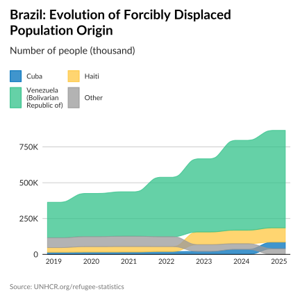
Destination
AI Insight: This bar chart ranks the ten primary countries of asylum for forcibly displaced populations originating from Brazil in 2024. The data is highly right-skewed, characterized by a massive disparity between the top destination and the remaining countries. The maximum value is 326,868 displaced individuals, which is an extreme outlier compared to the median value of 7,390 and the 75th percentile of 13,909. Consequently, the mean (41,523) is significantly pulled upward by this single maximum value. The distribution suggests that while displacement from Brazil reaches various nations, the overwhelming majority of this specific population group is concentrated in a single host country.
# Note: This plot shows where people FROM the country go (Outflow)
p_dest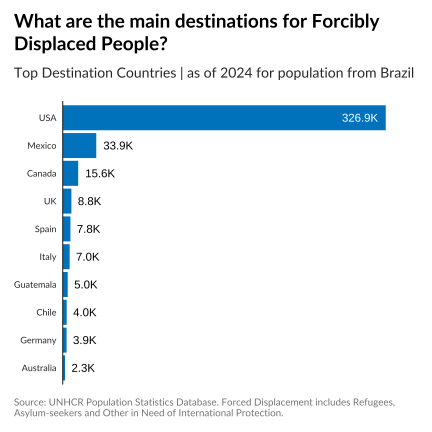
> **AI Insight**: The visualization utilizes a text geometry ('GeomText') to display a single data point. The underlying dataset consists of exactly one row and two numeric columns ('x' and 'y'), where both values are fixed at 1.0. With a standard deviation of 'NA' and no variation in values, this graphic does not display a statistical distribution, correlation, or trend. It functions primarily as a static text label, a placeholder, or a singular annotation element within a broader layout.
::: {.cell}
```{.r .cell-code}
p_migrant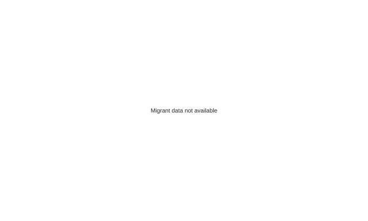
:::
Asylum System
Asylum Systems and Protection Capacity: The Brazilian Context
The operational landscape in the Americas remains characterized by significant volatility and rapidly shifting displacement patterns, a trend keenly observed within Brazil’s national asylum system. Data spanning 2019 through projections for 2025 reveals a system under immense pressure, where application and decision volumes have fluctuated dramatically. While the baseline activity suggests moderate inflows, the system has been punctuated by years of extreme influx, with processing volumes surging to highs of over 202,000 cases in a single year. This volatility places an extraordinary burden on administrative infrastructure, necessitating robust forecasting and resource allocation to manage the persistent time lag between initial registration and final decision—a gap that projections indicate will remain a critical challenge through 2026.
Behind these stark numbers lies a massive administrative undertaking to address the backlog. In 2024 alone, Brazil processed over 452,000 administrative decisions, a volume that testifies to the scale of the response. However, the flow of these decisions is far from uniform; the data indicates a highly skewed distribution dominated by a few major demographic pathways. This suggests that the asylum system is largely absorbed by specific, large-scale population movements—likely requiring simplified or prima facie processing modalities—while numerous smaller caseloads vie for the remainder of the adjudication capacity.
Despite the historic volume of decisions, the data reveals a complex protection environment where high processing numbers do not uniformly translate to refugee recognition. Among the top ten countries of origin in 2024, the recognition landscape was marked by deep disparities. While the mean recognition rate stood at approximately 13.9 percent, the median was significantly lower at just 1.85 percent. This divergence underscores that for the vast majority of nationalities, the threshold for international protection remains high, even as the system processes a dominant caseload of nearly 235,000 decisions for a single nationality.
Concurrently, the global trends highlight the dual nature of displacement, with Brazilian nationals themselves seeking protection abroad. Analysis of decisions in top destination countries for 2024 shows a similar pattern of high volume but conservative outcomes. While one primary destination processed nearly 34,000 cases, the median refugee recognition rate for Brazilians remained at 6.03 percent. Even when accounting for complementary protection, the data suggests that these movements are often driven by complex factors that frequently fall outside the scope of the 1951 Convention, reinforcing the need for comprehensive regional solutions that address the root causes of mixed movements.
AI Insight: The visualization represents a bar chart titled ‘Asylum Applications & Decisions | Brazil 2019 - 2024’, categorizing data by three distinct asylum stages. Although the title specifies 2024, the statistical data indicates the timeline extends from 2019 through 2025. The dataset consists of 21 observations (3 stages across 7 years). The data reveals significant volatility in the volume of applications or decisions: the values range from a minimum of 3,115 to a substantial maximum of 202,845. The distribution is heavily right-skewed, evidenced by a median (27,828) that is much lower than the mean (42,633) and a high standard deviation (44,445). This suggests a baseline of moderate activity punctuated by specific years of extreme influx or processing volume.
p_asylum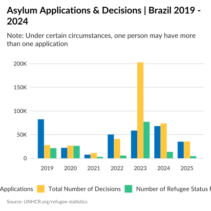
AI Insight: A parallel sets diagram titled ‘Refugee Status Determination Decisions’ visualizes the outcome of 452,062 administrative decisions in Brazil during 2024. The chart maps the relationships between 3 distinct categorical dimensions (likely representing stages such as population group and decision type) across 13 unique labels. The visualization utilizes flow width to represent volume, revealing a highly skewed distribution; the maximum single flow count is 145,548, which is significantly higher than the mean of approximately 14,127. This statistical profile suggests the data is dominated by a few major pathways—implying specific large demographic groups receiving uniform decisions—while numerous smaller flows comprise the remainder of the caseload.
p_process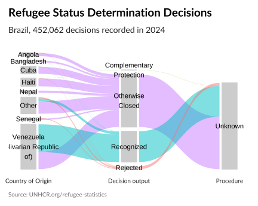
AI Insight: This visualization assesses the efficiency of Brazil’s asylum processing system by comparing cumulative applications against cumulative decisions from 2020 through projections to 2026. The chart utilizes an area plot to show the growing volume of cases, with the vertical axis representing the cumulative total (ranging from approx. 28,000 to a maximum of 418,606). The key analytical component is the horizontal distance between the ‘Registration’ curve and the ‘Decision’ curve, marked by segments and text labels. This gap visually represents the time lag (processing time) in days. The inclusion of data up to 2026 suggests the visualization incorporates forecasting to estimate future processing times and backlog reduction targets.
p_time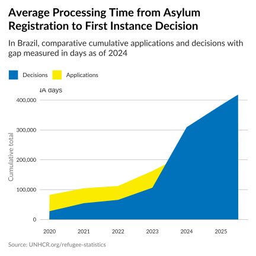
Recognition Rates
AI Insight: This bar chart illustrates the Refugee Recognition Rate for the top 10 countries of origin in Brazil for the year 2024. The data is ordered by the total number of decisions made (TotalDecided), regardless of the outcome.
Statistical analysis reveals a highly skewed distribution in recognition outcomes: - High Variability: The recognition rates range drastically from a minimum of 0.02% to a maximum of 61.9%. - Central Tendency: While the mean recognition rate is approximately 13.9%, the median is significantly lower at 1.85%. This indicates that for the majority of these top 10 countries, the likelihood of being recognized as a refugee is very low, with the mean being pulled up by one or two countries with high recognition rates. - Volume of Decisions: The caseload volume (TotalDecided) is also highly unequal, ranging from approximately 5,800 to nearly 235,000 decisions. The standard deviation for total decisions (70,152) is nearly double the mean, suggesting one dominant country of origin accounts for a massive portion of the processed applications.
Overall, the chart highlights that high decision volumes do not necessarily correlate with high recognition rates in the 2024 Brazilian context.
p_rec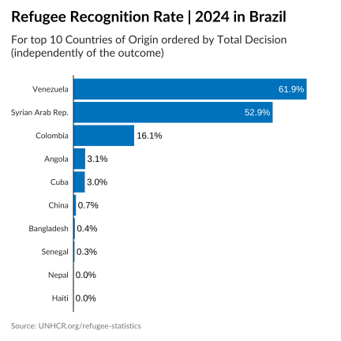
AI Insight: The visualization depicts the refugee recognition rates for nationals from Brazil in 2024, focusing on the top 10 countries of asylum determined by the total volume of decisions.
Statistical highlights include:
Volume of Decisions: There is a massive disparity in decision volume among the top 10. The country with the highest volume processed 33,941 cases, which is an outlier compared to the median of 2,520 and the minimum of 548. This indicates that one specific country processes the vast majority of Brazilian asylum claims.
Recognition Rates: The Refugee Recognition Rate is relatively low overall. The mean rate is 8.24%, with a median of 6.03%. The rates range from a low of 1.09% to a high of 26.4%.
Total Recognition: When accounting for complementary protection (Total Recognition Rate), the maximum recognition rate observed increases to 36.4%, with a mean of 10.3%.
Distribution: The data shows a right-skewed distribution for decision volumes, while recognition rates remain conservative across most major destinations.
# Note: This plot shows recognition rates for nationals FROM the country (Outflow)
p_rec_origin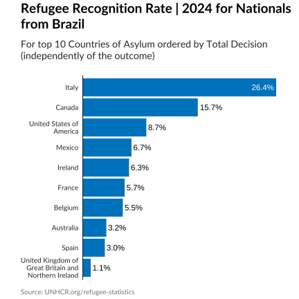
Solutions
Durable Solutions
The pursuit of durable solutions—voluntary repatriation, local integration, and resettlement—remains the definitive challenge of the global displacement crisis. While legal recognition provides immediate safety, it is the attainment of a durable solution that allows refugees to rebuild their lives with certainty. In the context of the Americas, specifically Brazil, the data reveals a stark and widening chasm between the granting of asylum and the realization of formal solutions for the reporting period spanning 2019 to 2025.
Brazil has demonstrated a continued, albeit volatile, commitment to providing international protection. The data indicates that refugee recognition rates have fluctuated significantly, responding to regional displacement shocks. Following a period of relative stability between 2019 and 2020, where recognitions hovered above 21,000 annually, and a subsequent contraction in the post-pandemic years of 2021 and 2022, the protection landscape witnessed a dramatic shift. In 2023, the data shows an unprecedented outlier spike, with recognitions soaring to nearly 77,200. This figure represents a massive administrative undertaking and underscores the critical role Brazil plays as a host country in the region.
However, behind these stark numbers regarding legal status lies a concerning disconnect regarding long-term outcomes. While thousands are recognized, the statistical profile for cross-border solutions is virtually non-existent. Throughout the entire six-year analysis, the mean value for recorded solutions stands at a negligible 7.5, with the median firmly at zero. The only perceptible activity occurred in 2019, with a mere 30 solutions recorded; for every subsequent year, including the period of the 2023 recognition surge, formal solution figures flatlined at zero.
This disparity creates a profound protection gap. The visual evidence illustrates a ribbon of need that expands dramatically while the line representing solutions remains dormant. Consequently, the burden falls disproportionately on local host communities to facilitate de facto integration in the absence of formal support mechanisms or resettlement opportunities. The total absence of recorded solutions from 2020 through 2025, juxtaposed against the tens of thousands of individuals granted refugee status, highlights not only a crisis of displacement but a crisis of resolution. Without a renewed commitment to responsibility-sharing and a substantial increase in resettlement quotas or supported repatriation efforts, the gap between the right to asylum and the right to a solution will continue to leave vulnerable populations in a state of protracted uncertainty.
AI Insight: A bar chart displays the trends in solutions for forcibly displaced people across borders in Brazil as of 2024. The analysis is based on a limited dataset of 4 observations, representing four distinct time points (Years). The statistical profile reveals an extremely low level of recorded solutions. The values range from a minimum of 0 to a maximum of 30, with a mean of 7.5 and a standard deviation of 15. The median value and the 25th percentile are both 0, indicating that for the majority of the observed periods, no solutions were recorded. The histogram confirms a distribution where most years show zero activity, with a single outlier reaching the maximum value of 30, suggesting that formal solutions for this specific population in Brazil have been negligible or rarely reported in the selected timeframe.
p_sol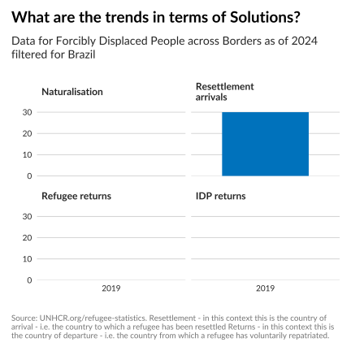
AI Insight: A line and ribbon chart illustrates the significant disparity between refugee recognitions (indicated in blue) and available solutions (indicated in green) in Brazil over the period from 2019 to 2025.
Overview: The visual demonstrates that while thousands of refugees are recognized annually, the number of recorded solutions is virtually non-existent, creating a substantial gap between legal recognition and durable outcomes.
Statistical Analysis: * Recognitions: The trend is highly erratic. * 2019–2020: Figures were relatively high, rising from 21,538 to 26,257. * 2021–2022: There was a sharp decline, dropping to 3,115 in 2021 and 5,809 in 2022. * 2023: The data shows a dramatic outlier spike, reaching a peak of 77,184 recognitions. * 2024–2025: Numbers receded to 13,643 in 2024 and 4,575 in 2025. * Solutions: The data for solutions is extremely sparse. The only recorded value is 30 solutions in 2019. For all subsequent years (2020–2025), the data is missing or recorded as zero, resulting in a flat baseline that contrasts sharply with the volume of recognitions.
p_sol_rec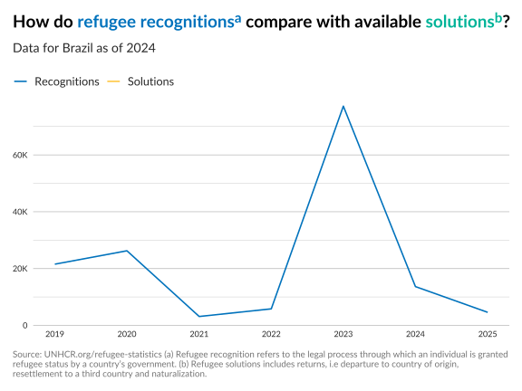